Proyecto integrador · Ciencia de Datos · Fase 4 · 22 pasos · duración estimada 8:41 leyendo a ritmo tranquilo. En cada paso: la imagen de lo que debe verse en pantalla, en amarillo lo que haces y con la barra verde lo que dices.
Ciencia_de_Datos_Fase4_Actividades_7_8_y_9_Rodriguez_Chacon_Carolina.pdf.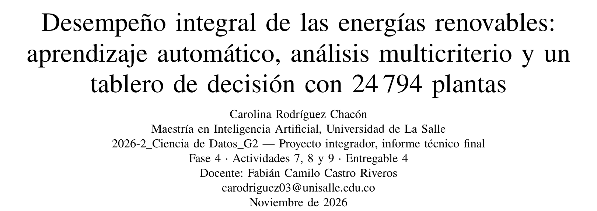
Cordial saludo, profesor Fabián. Soy Carolina Rodríguez Chacón, de la Maestría en Inteligencia Artificial. Le presento mi proyecto integrador de Ciencia de Datos: qué energía renovable tiene el mejor desempeño integral, con aprendizaje automático, análisis multicriterio y un tablero de decisión construido con 24 794 plantas.
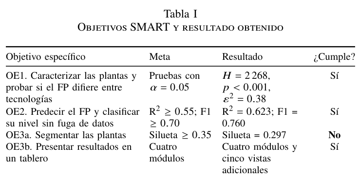
Mi pregunta es qué tecnología renovable tiene el mejor desempeño integral a escala de planta y qué factores técnicos y geográficos explican las diferencias entre plantas. La Tabla I muestra mis cuatro objetivos con su meta: cumplí tres. La meta de segmentación no la alcancé, y más adelante explico por qué.
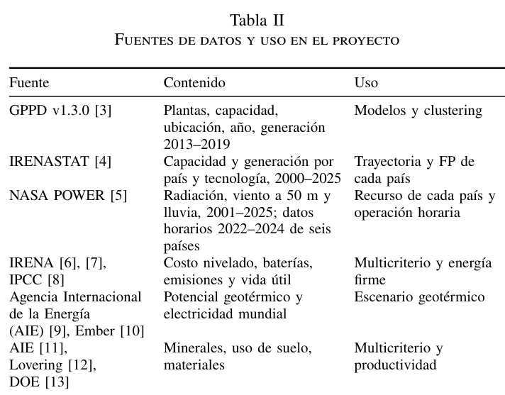
Uso la Global Power Plant Database del World Resources Institute, con licencia abierta, y la completo con IRENA, NASA POWER y fuentes de costos, emisiones, minerales y uso de suelo. La Tabla II resume para qué usé cada una.
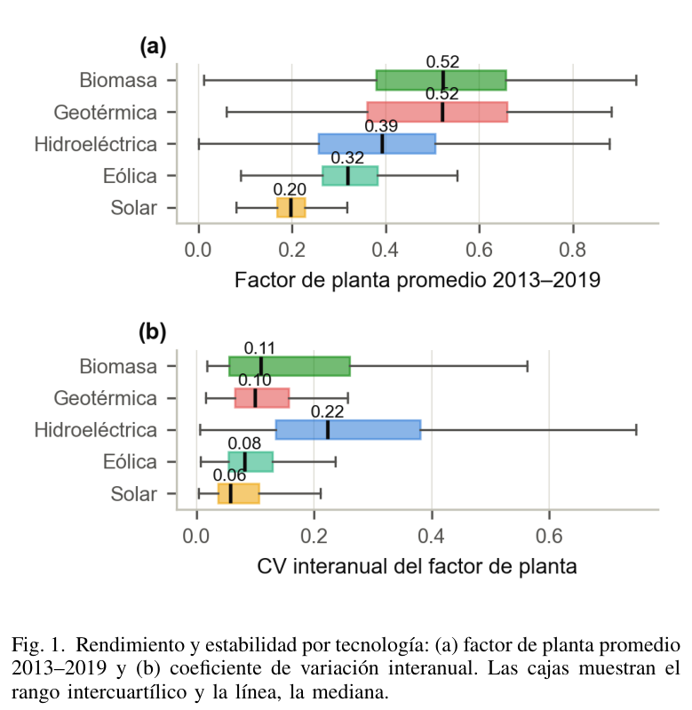
Mi métrica es el factor de planta: qué parte de la energía máxima posible entrega una planta. En la figura 1, la geotérmica y la biomasa rinden más por MW y la solar menos, pero la solar y la eólica son las más estables de un año a otro. El gran reto de calidad es que el 76 % de las plantas no reporta generación, y el 88 % de las que sí, está en Estados Unidos. No imputé esa variable, porque sería inventar justo lo que quiero predecir.
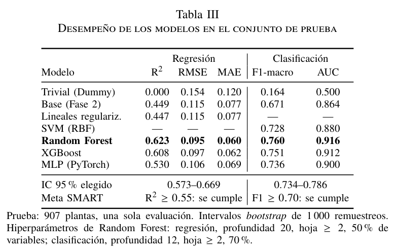
Quedaron 6 011 plantas, partidas 70, 15 y 15 por sitio, para que una misma central nunca quede en entrenamiento y en prueba a la vez; la prueba la usé una sola vez. En la Tabla III comparé modelos lineales regularizados, SVM, Random Forest, XGBoost y una red neuronal en PyTorch. Ganó Random Forest en las dos tareas: R cuadrado de 0,623 frente a 0,449 del modelo base, y F1 de 0,760 frente a 0,671.
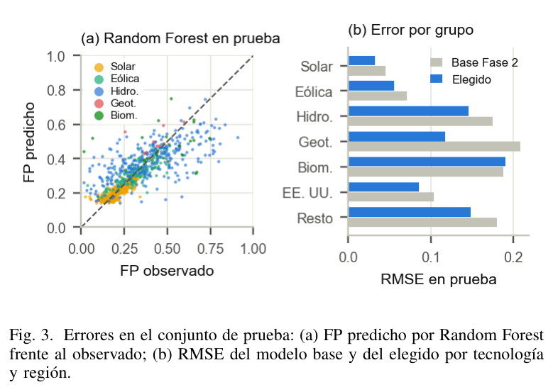
La figura 3 muestra dónde falla: el error es mayor en la biomasa, la hidroeléctrica y la geotérmica, porque me faltan datos de hidrología, combustible y despacho.
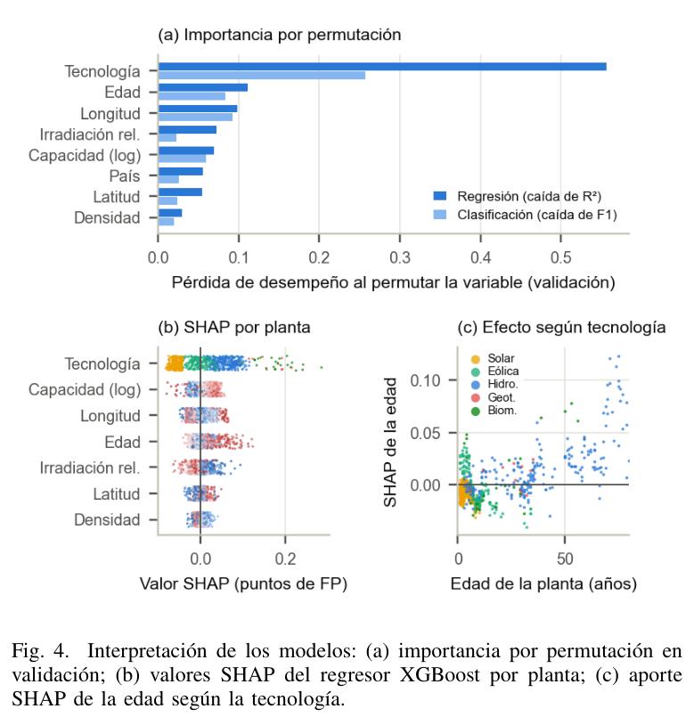
Y la figura 4 explica qué pesa más en la predicción: la tecnología es lo más importante, seguida de la edad de la planta y su ubicación.
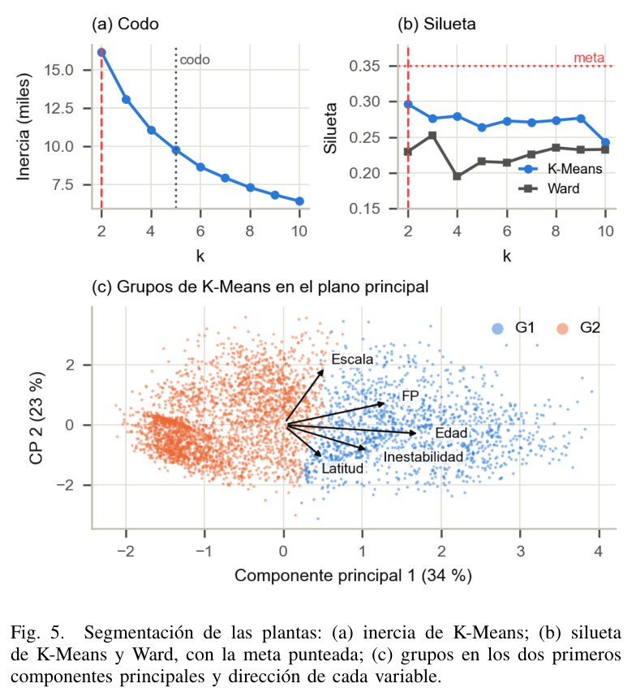
Sin decirle la tecnología, K-Means encontró dos grupos: un parque antiguo, casi todo hidroeléctrico y variable, y uno nuevo, solar y eólico, muy estable. La silueta fue 0,297 y no alcancé mi meta de 0,35: las plantas forman más un continuo que grupos nítidos, y preferí reportarlo así en vez de forzar el resultado.
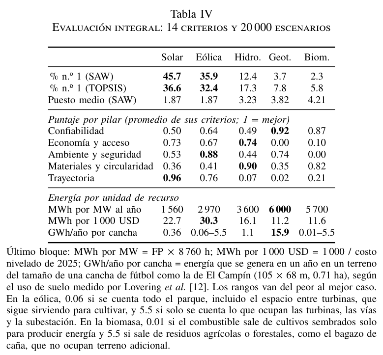
Rendir mucho no basta. Combiné 14 criterios en cinco pilares, como costo, emisiones, terreno, minerales, reciclaje y trayectoria, en 20 000 escenarios con pesos al azar. La Tabla IV muestra que la solar queda primera en el 45,7 % de los escenarios y la eólica en el 35,9 %. Ninguna gana en todo: la hidroeléctrica lidera en materiales y la geotérmica, en confiabilidad.
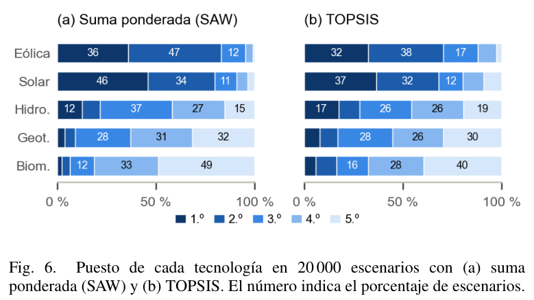
La figura 6 muestra que con TOPSIS el orden se mantiene, y que la eólica es la más consistente: queda entre las dos mejores en el 83 % de los escenarios.
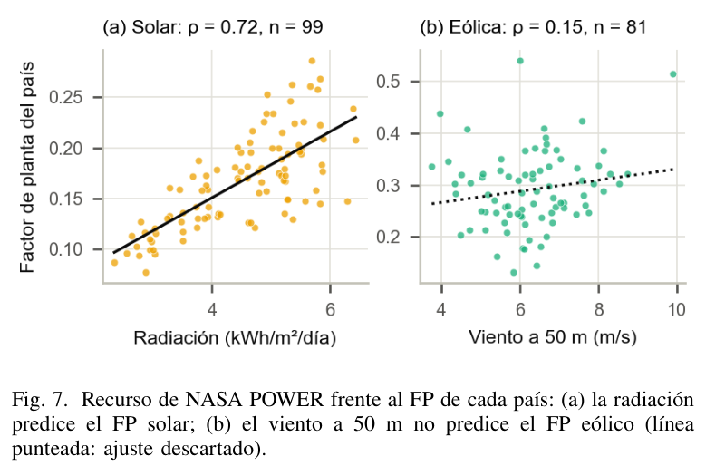
Para cada país usé el rendimiento real de IRENA y el recurso de NASA. En la figura 7, la radiación sí predice el rendimiento solar, con rho de 0,72, pero el viento no, así que no lo usé y lo reporto como un hallazgo honesto.
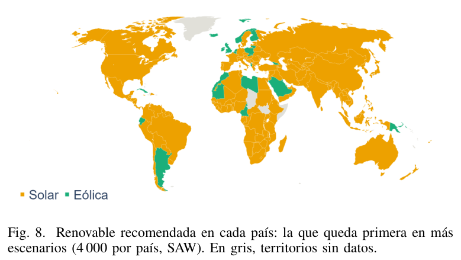
El resultado está en la figura 8: la solar se recomienda en 141 de 166 países y la eólica en 25. Pero el mapa usa promedios anuales, y en 23 países del norte el invierno es muy oscuro; más adelante lo muestro en el tablero.
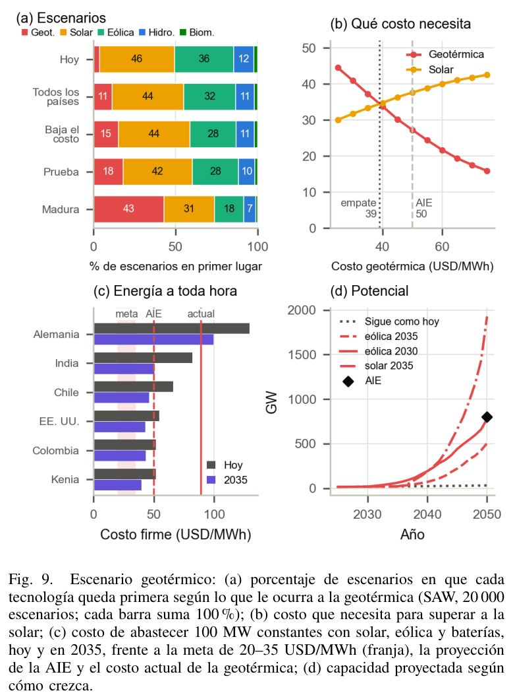
Me pregunté qué pasaría si la geotérmica con ondas milimétricas fuera un hecho. En la figura 9a, pasaría del 4 % al primer lugar, pero solo si llega a todos los países, crece como la eólica y cuesta menos de 39 dólares por MWh. Su valor real es entregar energía a toda hora: en la 9c, lograr lo mismo con solar, eólica y baterías cuesta entre 52 y 129 dólares por MWh. Y si despega en 2030, la 9d muestra unos 780 GW en 2050.
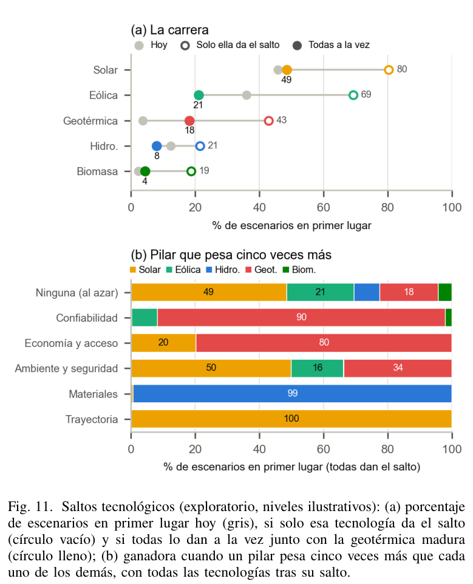
¿Y si todas las renovables mejoran? En la figura 11a, si solo la solar da un gran salto, queda primera en el 80 % de los escenarios; si todas lo dan a la vez, baja al 49 %. La 11b muestra que, si se prioriza la confiabilidad, gana la geotérmica madura. No hay una ganadora única: lo más probable es que se complementen.
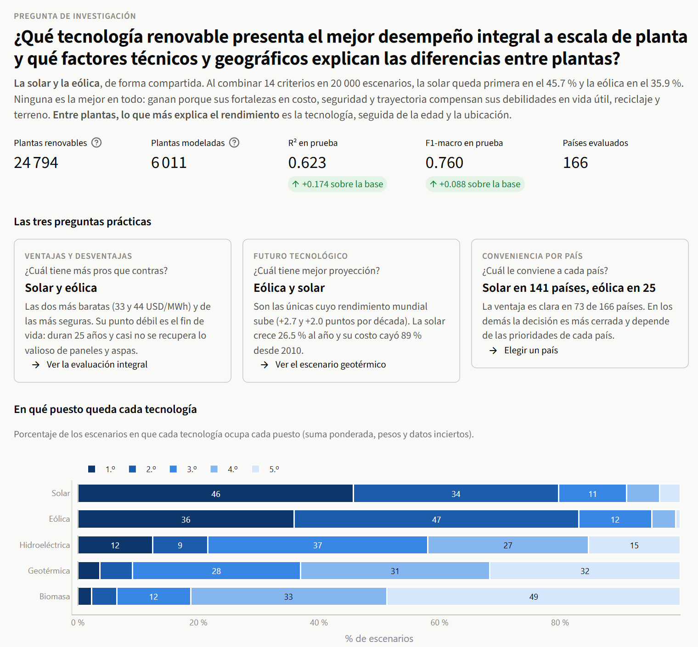
Todo esto se puede explorar en el tablero que publiqué en Streamlit. Tiene diez vistas, y la primera pantalla responde la pregunta con los indicadores principales.
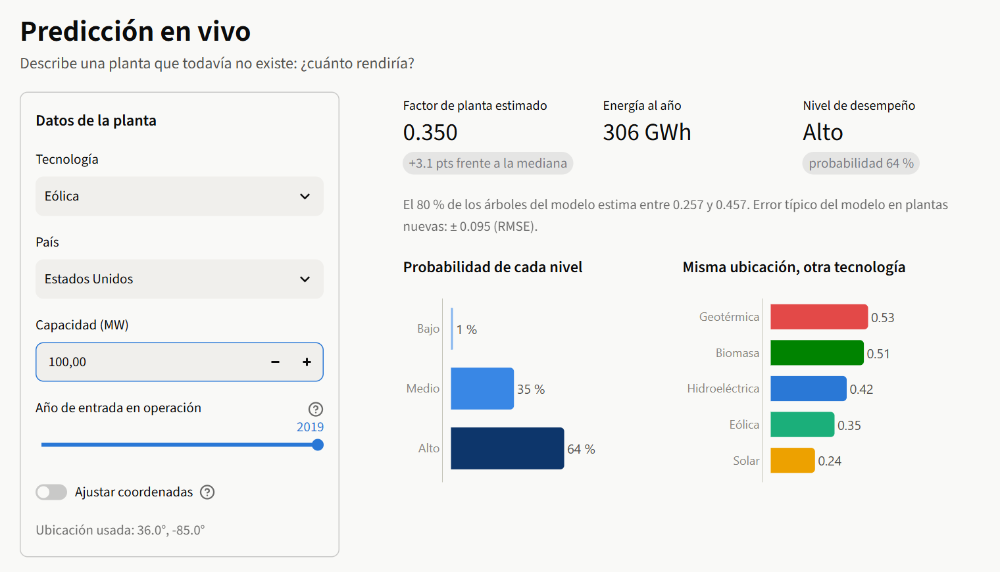
En Predicción en vivo puedo evaluar una planta antes de construirla: una eólica de 100 MW en Estados Unidos tendría un factor de planta de 0,35 y unos 306 GWh al año. Si fuera del año 2000, bajaría a cerca de 0,27: el modelo aprendió el avance de las turbinas.
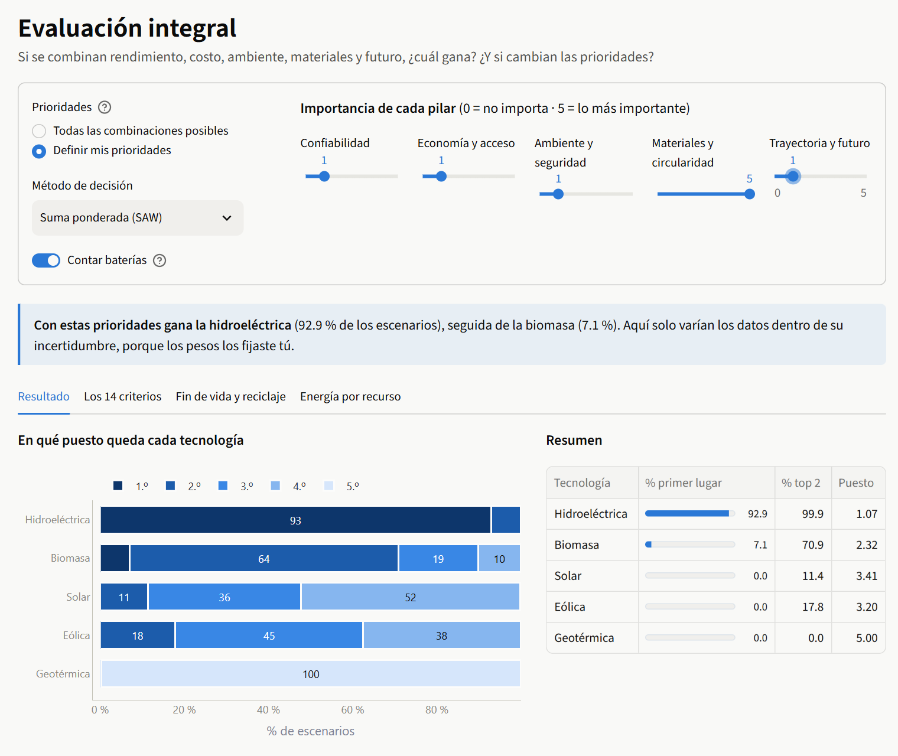
En Evaluación integral puedo poner mis propias prioridades: si lo que más importa son los materiales y el reciclaje, gana la hidroeléctrica en el 93 % de los escenarios.
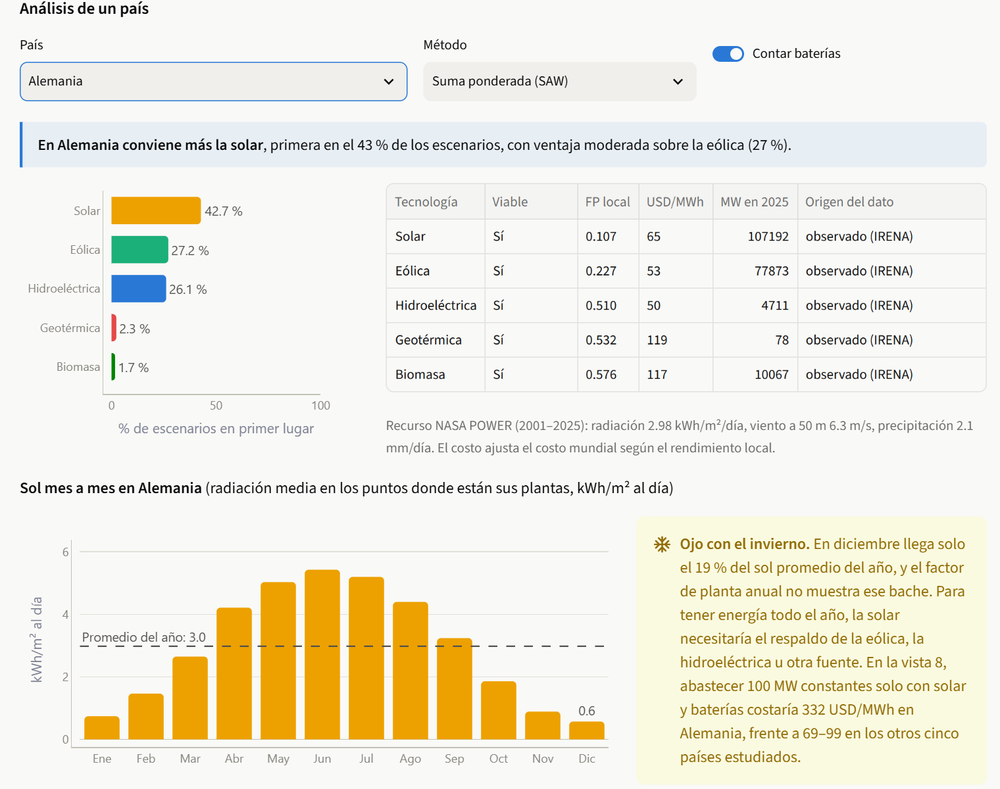
En la vista por país, a Alemania se le recomienda la solar, pero el tablero advierte que en diciembre llega solo el 19 % del sol promedio: allí la solar necesita el respaldo de otras fuentes en invierno.
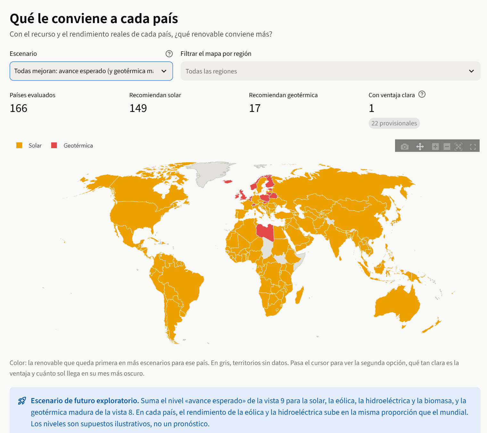
Y de cara al futuro: si todas las renovables mejoran a un ritmo esperado y la geotérmica madura, la solar seguiría primera en 149 países y la geotérmica en 17, pero en 125 la decisión queda reñida. Con un gran salto de todas, la solar ganaría en los 166.
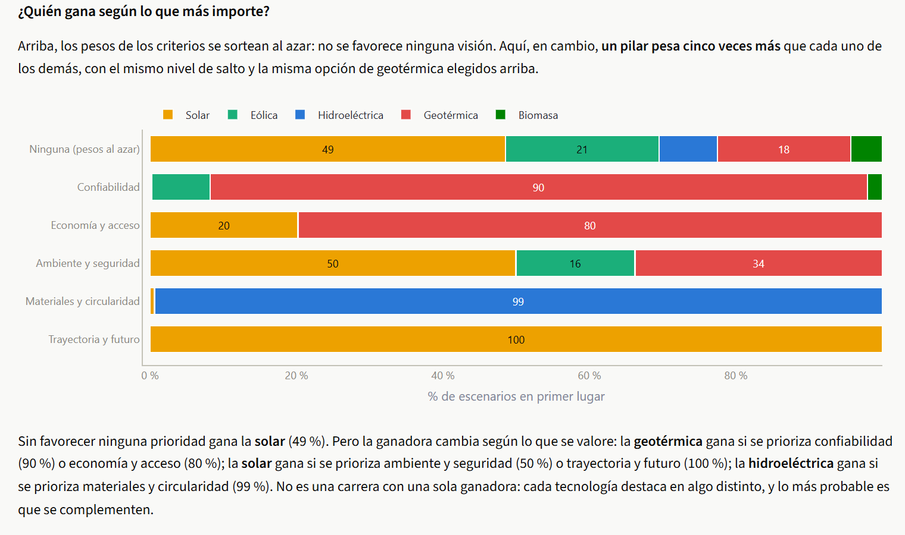
Y en la vista 9 está la carrera entre todas: según lo que más se valore, gana una tecnología distinta.
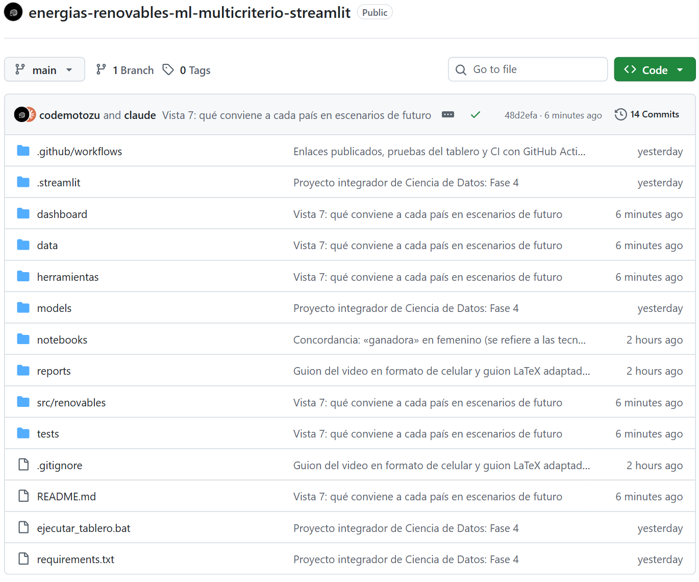
Todo es reproducible: el código, los datos, los cuadernos y las pruebas automáticas están en GitHub, con semilla 42 y verificación entre fases. El informe tiene los enlaces al tablero, al repositorio y a los cuadernos en Colab.
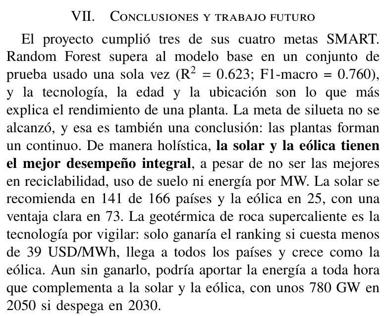
En conclusión: de manera holística, la solar y la eólica tienen el mejor desempeño integral; la tecnología, la edad y la ubicación explican el rendimiento de una planta; y cada país necesita su propia combinación. Mis principales límites son el sesgo hacia Estados Unidos, la falta de datos de hidrología y que el mapa por país no ve las estaciones. Aprendí que un buen promedio puede esconder lo importante, y que una meta no cumplida, bien explicada, también es un resultado. Muchas gracias, profesor.